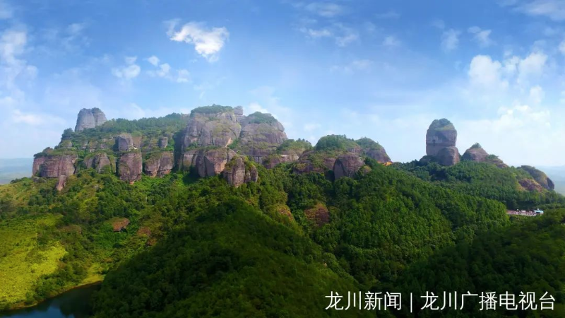

龙川霍山
龙川霍山是广东七大名山之一，海拨约550米，以它奇特的山形，清幽的岩宇，悠久历史而著名，是一个以丹崖、奇岩、秀石、碧泉、云影取胜的丹霞地貌风景区，有“丹霞山第二”之美誉。河源霍山风景区共有二十七岩、四十八峰、十一泉池、八大洞府等名胜古迹，建有6公里的凌空栈道，包括200米的玻璃栈道和400平方米的大型玻璃观景飘台；还可以欣赏到文人墨客、高僧道士留下的足迹和诗文.

霍山旅游风景区内三组峰峦组成一个整体，气势磅礴，奇峰突起，怪石嶙峋。历代名人、墨客、王公朝臣、高僧老道慕名登霍山者，数不胜数，晋、葛洪在此修炼、唐宣宗为僧曾到此游，宋、蓝乔在此成仙，苏东坡也曾到此一游。如今的霍山不仅记录了环境的变迁、文化的积淀，而且铭刻着光荣的革命历史，是河源市爱国主义教育基地和科普教育基地。
